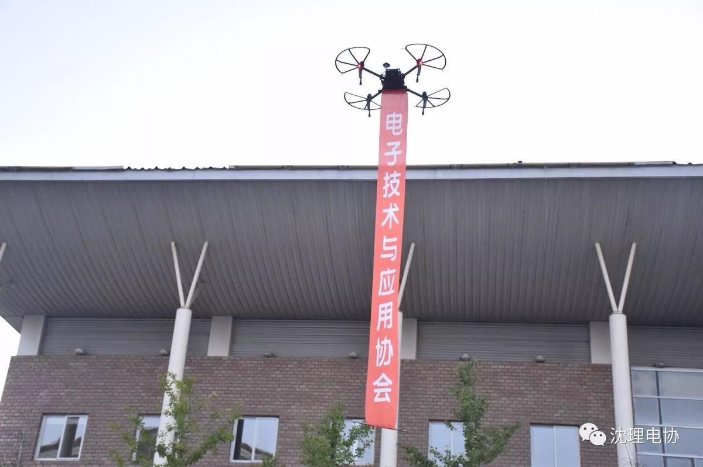
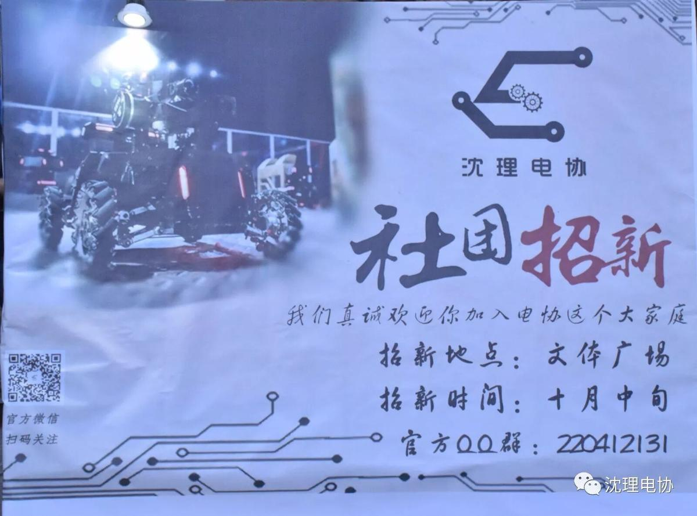
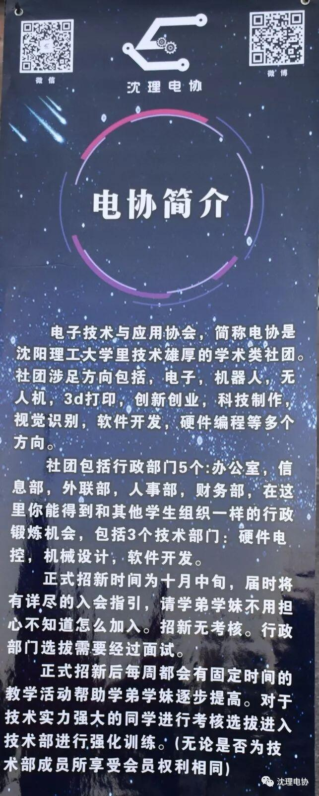
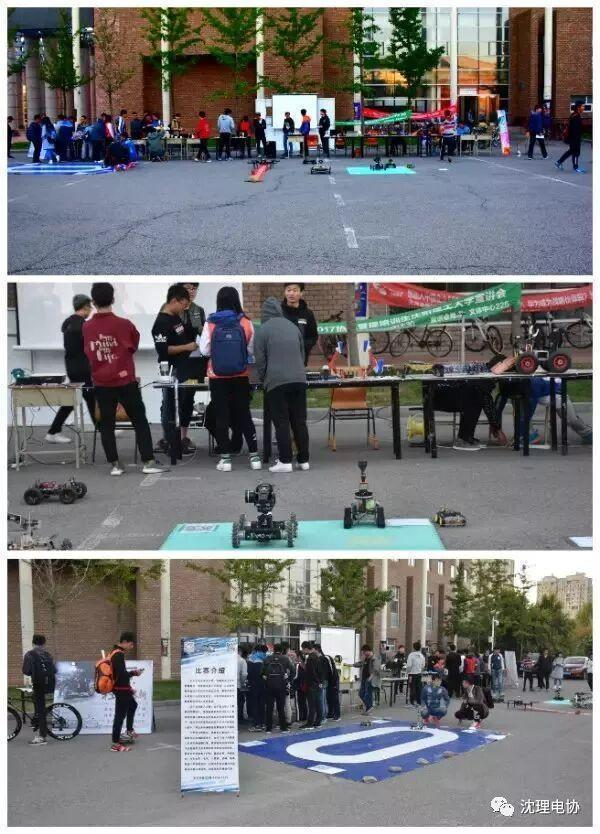
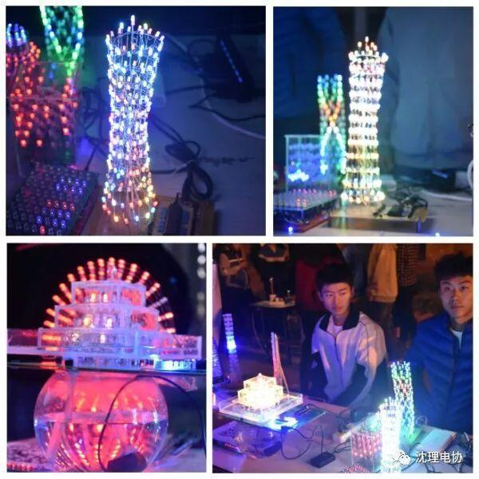
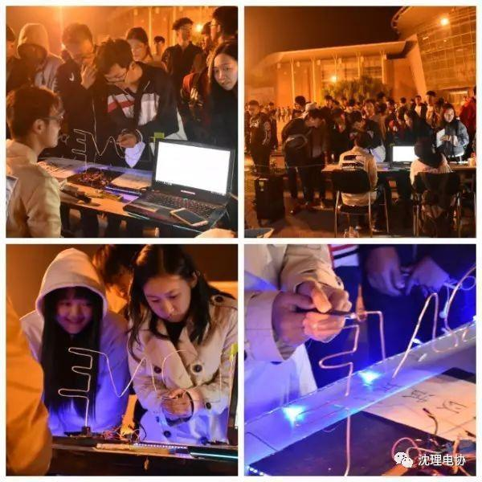
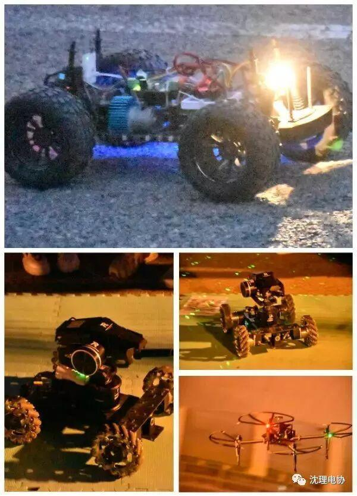
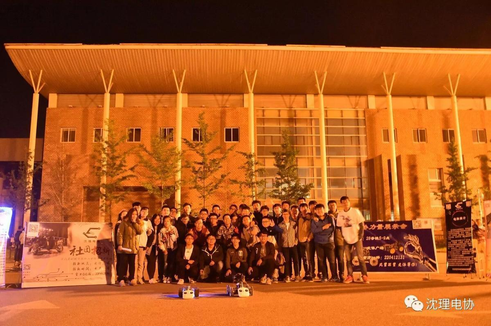

电协力量展示会
电协力量展示会
不管我们散落何处，有趣的灵魂终会相遇

生活真的好神奇啊
她安排应该相遇的人相遇
每个相遇的你
都是我最好的礼物
接下来
好戏出场了


电协这个处处充满科技感的地方，你感兴趣吗？

接下来，让我们一起回忆一下电协的力量吧！

下午四点半，电协的小伙伴们就把各种炫酷的家底拿出来了，供大家欣赏他们的作品，相信听着学弟学妹们赞叹的声音，他们一定很自豪吧！

随着夜色暗淡下来，这些炫酷的LED灯终于展示出它的魅力，吸引了很多同学驻足观望

好玩的游戏环节，一样吸引了同学们前来玩耍

酷炫的小车们

还有这些可爱帅气的电协人儿们！
熟悉的九月
新鲜的面孔充满校园
在这个喧嚣的城市
总会有一个地方
也许就在转角的某处
所以
你有遇到一个
让你感叹相遇的人吗？

初来乍到的我
很幸运遇到贴心又负责人的学长
真想说一句
“学长辛苦啦！”

风里雨里 电协等你
最美不过在电协遇到恰是好时光的你

电协的气息还在
熟悉的笑脸还在
你们还在
我还在
很高兴认识你！
编辑：王宁
敬
请
关
注